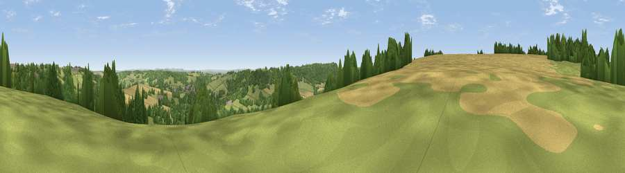

Viewpoint near Ashley
#20474 in England · top 33% of its area beats it · near AshleyThe view, rendered

A 360° render of this exact spot computed from the terrain model, tree cover and land cover — summer colours, afternoon light, calibrated against photographs of famous viewpoints. Real trees, hedges and buildings will differ in detail.
The panorama
Grey silhouette: terrain skyline in each direction (720 bearings, Earth curvature and refraction included). Dashed green: skyline with trees (+15 m) and buildings (+8 m) as obstacles. Blue strip: how far the ground is visible on each bearing.
Where the view opens
Wedge length = distance to the farthest visible ground on that bearing (vegetation-aware). Rings at 10, 25 and 50 km.
What fills the view
50% grassland · 33% woodland · 16% cropland · 1% built-up
Angular shares of the visible panorama (visual magnitude), not map area. Landscape diversity 0.46 (0–1 Shannon).
Key numbers
More beautiful places nearby
The staircase of upgrades: each row has a higher view potential than everything closer. Driving times are estimates from straight-line distance, calibrated against real road routing — check an actual route before setting out.
| Place | Direction | Drive | Score |
|---|---|---|---|
| Viewpoint near Monkton Farleigh | SSE · 3 km | ~7 min | 54.1 |
| Viewpoint near Bathford | SSW · 3 km | ~8 min | 64.0 |
| Hanging Hill | W · 9 km | ~18 min | 76.4 |
| Cley Hill | S · 25 km | ~40 min | 76.8 |
| Viewpoint near Stinchcombe | NNW · 29 km | ~46 min | 80.5 |
| Nottingham Hill | NNE · 61 km | ~84 min | 80.9 |
| Chase End Hill | N · 66 km | ~89 min | 81.5 |
| Garway Hill | NNW · 66 km | ~90 min | 84.6 |
51.42394, -2.28508 · source: screening · position refined by local search. Computed location — check access rights before visiting.